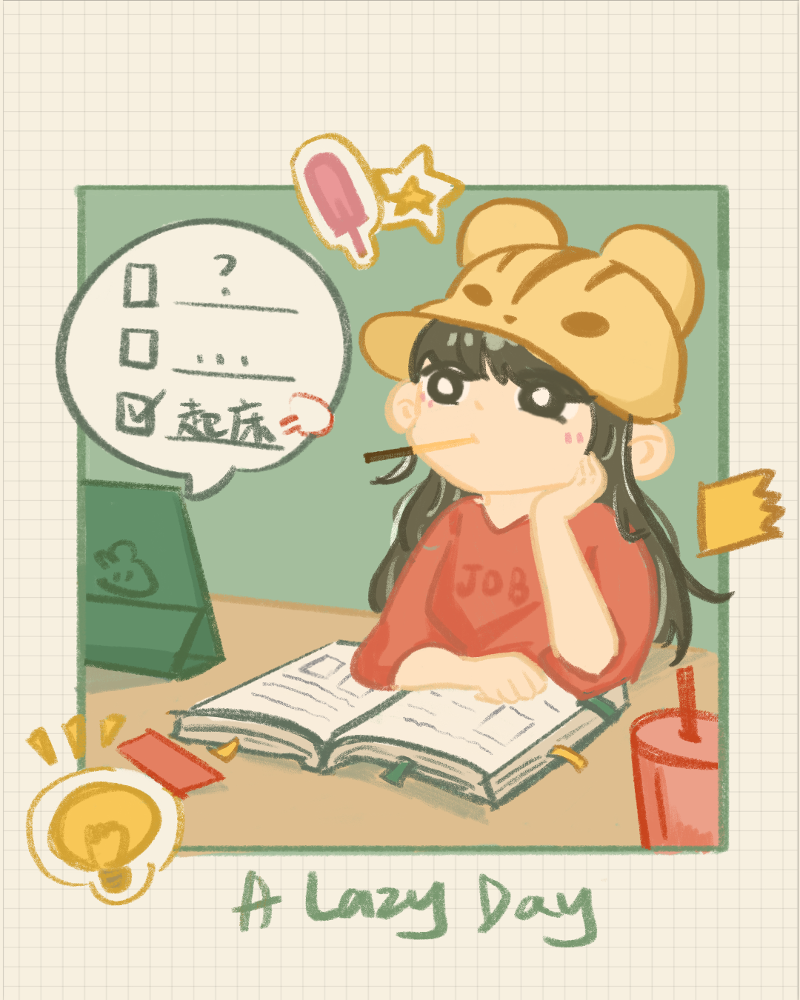
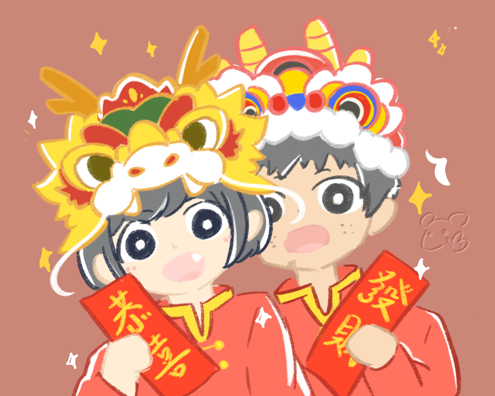
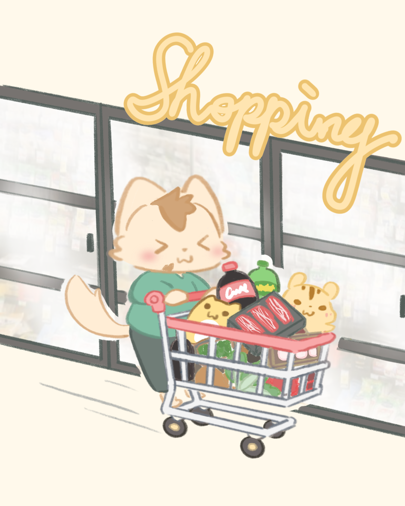
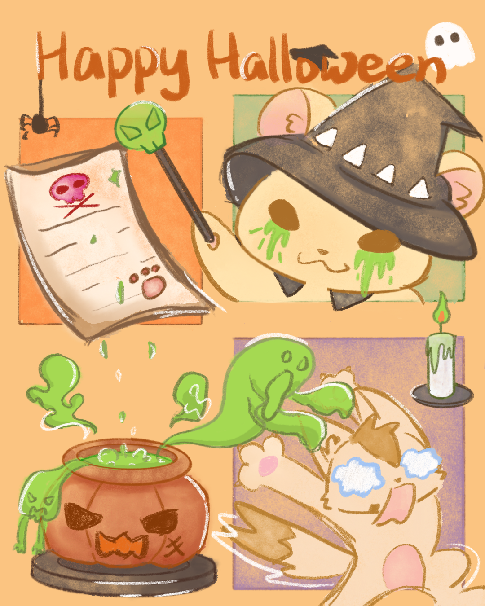
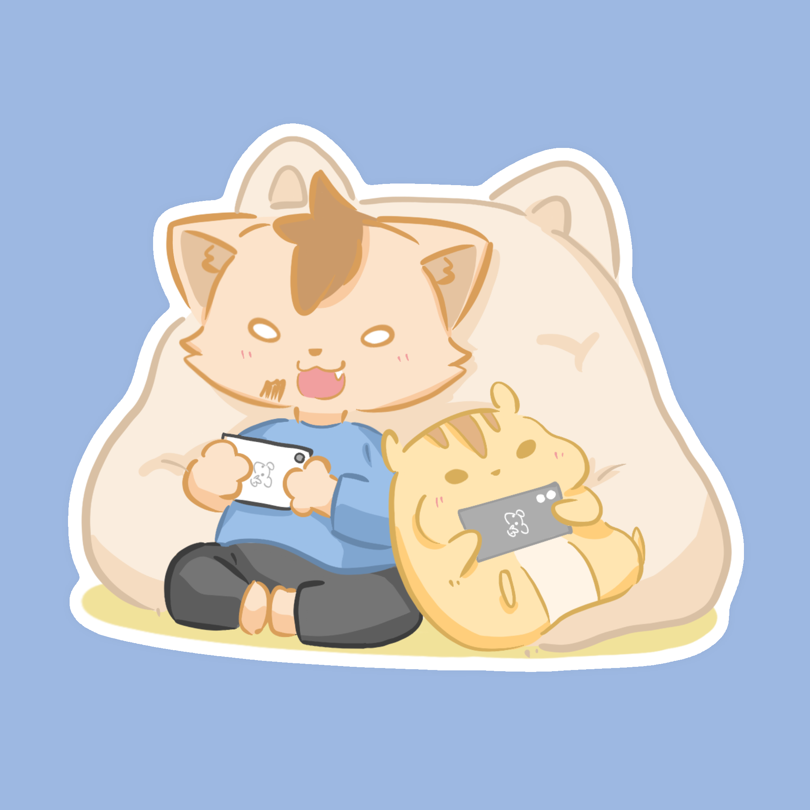

Warm everyday moments
Hi, I'm Pai Pai. Welcome to my illustration diary.
I love capturing warm everyday moments and whimsical details in my art. I hope these little pieces can bring a touch of healing and joy to your day.
Follow @paipai_sesame